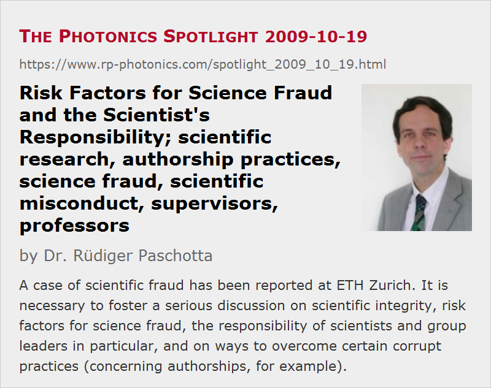

Risk Factors for Science Fraud and the Scientist's Responsibility
Posted on 2009-10-19 (revised on 2009-10-20) as a part of the Photonics Spotlight (available as e-mail newsletter!)
Permanent link: https://www.rp-photonics.com/spotlight_2009_10_19.html
Author: Dr. Rüdiger Paschotta, RP Photonics Consulting GmbH
Abstract: A case of scientific fraud has been reported at ETH Zurich. It is necessary to foster a serious discussion on scientific integrity, risk factors for science fraud, the responsibility of scientists and group leaders in particular, and on ways to overcome certain corrupt practices (concerning authorships, for example).

Ref.: press release 2009-09-21 of ETH Zurich; On being a Scientist: Responsible Conduct in Research by the National Academy of Sciences, the National Academy of Engineering, and the Institute of Medicine; Recommendations of the Commission on Professional Self Regulation in Science by the Deutsche Forschungsgemeinschaft (DFG)
(See also the newer article "How PhD Students Should Get Supported by Supervisors".)
Recently, a new case of science fraud has been revealed at ETH Zürich. Data have been fabricated, apparently in a fashion much like that of the famous Jan Hendrik Schön. A rather embarrassing aspect is that this happened in the group of the vice president (Peter Chen), who subsequently had to resign from this position. I address this topic with the hope that a more serious debate than what we had so far would help to overcome some severe problems of many universities.
The recent debate largely focused on questions like the following:
- Why could the perpetrator not be identified with certainty by the investigating committee?
- How could it happen that lab books disappeared?
- Why did it take so long (about 10 years) to reveal this incident?
Some even asked why the vice president had to resign, given that his guilt had not been proven. Apparently, these people couldn't imagine that the responsibility of a group leader goes further than just not to commit forgery himself. Others demanded his resignation even from the professor position, apparently not considering whether it is proportionate to bring his whole professional career to an end.
What I would have thought to be essential are the following questions:
- To what extent did the circumstances in that research group favor fraud? In particular, was the group leader seriously involved in the research? Did he not know that the measurement apparatus was apparently not in the condition to produce real data?
- What are the general risk factors for science fraud, and how can they be reduced?
- What exactly is the responsibility of the scientist, specifically a group leader?
Unfortunately, the report of an investigating committee, which hopefully judged convincingly on the case-specific issues, can not yet be published for some legal reasons; a court case is currently active. (It even appears to be possible that the report will never be published, although Peter Chen says he wants the report to be published as soon as possible.) So we don't really know these facts. The other (more general) questions could well be treated now, but have not been properly addressed at all in the current debate, particularly not by the ETH leadership. Below I describe my position on these issues.
Reducing the Risk of Fraud
Fraud is obviously a kind of moral failure. It is very narrow-minded, however, to consider only the moral dimension. Nevertheless, some people do so, and their conclusions are then typically the following:
- Among a larger group of researchers, there are always some immoral persons. You can't really do anything against that.
- We need to have some measures in place which create a risk for fraud to be detected. However, such checks can never be comprehensive, and with sufficient criminal energy they can always be tricked out in some way.
- Sometimes, it is suggested to tell students more often and more clearly that fraud is evil.
The main conclusion is then that we can't do much and have to live with some level of fraud. That's at least convenient: we can't do much, so we don't have to do much, and if fraud happens, it is not our fault.
However, one can go much further than that, if one is interested in solutions. It is a particularly important question to consider the risk factors which make fraud more likely. Among those, a particularly powerful one is a situation where a young researcher is subject to a huge pressure to be productive, and at the same time doesn't receive adequate support. If that researcher faces the risk that his whole career will fail due to a serious technical problem, for example, he may decide to fabricate the deadly needed data. The higher the pressure is, the lower the degree of moral inferiority is needed to produce fraud. Personally, I believe that this is the main risk – substantially larger than the risk that some successful researcher tries to appear not only good but excellent by improving his data with improper means.
It is quite straight-forward to tell what can reduce that risk. Just make sure that this combination of pressure and a lack of support does not occur. Imagine that a senior researcher (a professor or an experienced post-doc, for example) sees it as his task to accompany some young researchers and to give them support. They know then what helps in case of trouble: to talk to that person, who will then help to analyze the problem and to identify promising measures. The motivation for fraud is then close to zero, even in difficult situations. Why would anyone take the risk to commit fraud which might be detected, when he has that simple and clean option?
I supervised a number of Ph. D. students at ETH between 1997 and 2005, and I am fairly sure that none of these persons committed fraud. Not because I could guarantee that I would have detected it, and not only because I believe that these were all respectable and honest persons. (I really believe that.) The point is that they had adequate support and thus no motivation to cheat. We did have problems occasionally, but I saw it as my duty to find solutions together with them.
The Responsibility of a Research Group Leader
It is pretty clear now what is the responsibility of a group leader concerning fraud prevention. Primarily, it is to create the conditions where productive and clean research, meeting all the common standards, can occur. That means:
- Giving adequate support. This is most important. Checking results alone is not sufficient, as it can hardly be comprehensive and it does not reduce possible motivations for fraud.
- One must establish an atmosphere where certain standards and behaviors are perceived to be just natural: all people (including the group leader) work closely together, support each other, openly discuss problems, concerns and possible solutions, and do everything in a clean, transparent way, always respecting all standards and rules.
These aspects, by the way, have hardly been addressed in the context of the current case.
Who Does That Job?
The only caveat: this kind of work requires a lot of time. It is therefore hardly conceivable that a professor with a group of more than 20 Ph. D. students can give such kind of support to everyone while also fulfilling all the other commitments related to teaching and administrative issues in particular.
A frequently used model is that within a professor's group, some other senior researchers (assistant professors or experienced post-docs) take care of most research projects, essentially taking over the responsibility from the professor, the head of the whole group. That is absolutely appropriate, provided that two conditions are met:
- The people carrying the responsibility have sufficient experience and character to do so.
- The professor does not pretend to still carry that responsibility.
Corrupt Authorship Practices – a Serious Risk Factor
A bad and risky habit of some professors – particularly some of those leading large research groups – is that they claim the “automatic” coauthorship for any publications from within their group, even for work where they haven't contributed anything substantial.
It has been discussed in depth by many standards committees (see the references above) what the conditions for authorship must be, and there is a fairly broad consensus on the resulting rules, at least in theory. Essential rules are:
- Any authorship on a scientific publication requires concrete substantial contributions. It is absolutely not sufficient to be the group leader, to have helped in acquiring the research grants, or to have had the initial idea to do that research.
- Every author carries a responsibility for the validity of the results. How far exactly that goes, is partially a matter of dispute. Some claim that every author must carry responsibility for all aspects of a paper, but probably most others find that impractical and too extreme. A very good solution is to state explicitly in a paper who has done what, so that the responsibilities are clear. (The Nature journals deserve credit for recently having introduced the rule that such statements are mandatory for all future publications.)
Despite the broad theoretical consensus, these rules are routinely violated at many places, and little is done to change that. To give an example, a former vice president of ETH Zurich once judged in 2006 that it is in line with a common practice at ETH and elsewhere that a professor can claim the coauthorship of a whole book chapter without having written a single sentence of it. He obviously didn't care that this absolutely contradicts the rules which have long been in place at ETH (and were updated in 2007). His successors, in particular the current president (Ralph Eichler) and the resigned vice president (Peter Chen), refuse even to comment this, let alone to take concrete action in order to overcome such corrupt practices. (In case that I become aware of any substantial changes, I will mention this here.)
There are also cases where authorships are awarded in return for providing some important parts, even if the lender did not participate in the actual research and these parts where not the actual object of investigation. I once learned about a case where authorships were awarded to some company people in return for delivering a few pump laser diodes for free. A professor seriously believed (or at least claimed) that it was appropriate to offer the company people the choice between regular payment and authorships. At least in that extreme case, ETH decided that this was wrong. Beyond that, there have not been any consequences, however. Not even the editor of the journal was informed.
Some people doubt that such practices are related to the problem of science fraud. It is easy, however, to recognize such a relation:
- Improper authorships signal to others that a person guarantees the validity of the results, although that person is actually unable to do so. In effect, checks and balances against fraud are simulated which don't really exist.
- Such authorships also signal to the collaborators that rules are not necessarily relevant, at least not for the boss. This can easily undermine the willingness of others to observe other rules, and in that way put the quality of research at risk.
Why the Risk Factors are not (yet) Addressed
It is just too convenient for bosses to let many young researchers work in their group and then to harvest a plethora of results for their own publication lists. Some would absolutely object the idea that they should give up coauthorships where they are not according to the rules, because they feel that they deserve this as a credit for their general contributions, such as building up the group, attracting research money, defending resources against colleagues, etc. They seem to feel that it would be unfair not to give them that credit. But why are they not satisfied with acknowledgments which exactly describe their contributions? (Example: “The authors thank X. Y. for acquiring vital resources, in particular funds for salaries and lab infrastructure.”) Obviously, they consider the truth to be not sufficiently honorable, and therefore prefer a lie (pretending their involvement in the scientific work).
Who is actually responsible for enforcing the rules? Obviously, professors should be responsible for respecting the rules. If they choose not to do so, and somebody has the courage to complain about this, it becomes a case for the university's leadership. Unfortunately, not much happens along these lines. The main reasons are:
- Few people have the courage to complain about such things. Imagine a young Ph. D. student complaining about his boss – his career could well be at risk. Therefore, few students would dare even to mention the issue in a discussion with the professor.
- The leading persons are themselves professors, and often of exactly that kind who acquired much of the reputation and power with such practices. Their motivation further suffers from the idea to get into conflict with colleagues (whereas the opinion of some low-rank persons doesn't really matter). And it is easy to find excuses: the rules are not clear, the facts are not clear, we don't find the issue sufficiently important, etc. If necessary, evidence can be ignored, low-rank people can be intimidated, etc., and the risk to be hold responsible for such a failure is normally small.
So this is essentially why such practices are not overcome: those in power have no interest in abolishing what brought them to power. For that reason, we have to live with all kinds of adverse consequences: not properly working checks and balances, not sufficiently supported young researchers (sometimes becoming frustrated or cynical), and a strongly increased risk of science fraud.
What is Needed
Having realized the reasons for the difficulty of overcoming the described practices, I don't believe that there is a simple way to get this fixed. This is not a reason, however, to give up. I suggest some elements toward a resolution of these issues:
- Scientists need to reflect their responsibilities more in depth. It is just not sufficient to know that fraud is evil. Everybody should be aware (and group leaders in particular) that group leaders carry a high responsibility, going far beyond not committing fraud themselves (and possibly resigning when things go wrong).
- A competitive environment, where much is demanded from everybody, does not necessarily create an excessive risk for fraud to happen. I do not agree with those saying that you cannot have highest productivity combined with clean practices.
The risk of fraud is minimal as long as the group leader gives adequate support where needed – not for every detail, but when things get difficult. A really dangerous situation occurs when young researchers are not adequately supported, and particularly when the lack of support is substituted with an extreme pressure to be productive. So this must be avoided. - The length of a publication list should not be used without special care as a criterion for somebody's scientific standing. This criterion is compromised by bad authorship practices, and using it without that awareness also strengthens the motivation for bad practices. - As it is impossible that one professor gives powerful support to 20 or more research students, it is not appropriate that one professor claims to be responsible for the validity of the work of 20 or more researchers. It is absolutely acceptable to transfer responsibility to others, but one must then not pretend to still carry it oneself. In particular, the practice of automatic (“honorary”) coauthorships must be ended. - We must demand from any person in a leadership position (such as the president of a university) to actively work against corrupt practices. This is vital for maintaining the integrity of scientific research and of the research institutions. The reputation of science and universities in the public also depends on that. Of course, not everybody has the character and strength to fight against such things. If one hasn't got that strength, one should not get into such positions, or resign from them. - All people, including those in lower ranks, should raise their voices when they become aware of wrong practices, as long as the risk of retribution is not excessive. (A little courage should be a matter of one's honor.) One may not dare to blame some concrete superiors, but it shouldn't be too dangerous to demand in general that more is done to enforce the rules.
Let us hope that in these ways we will achieve further progress in the interest of scientific integrity. Further suggestions are welcome.
This article is a posting of the Photonics Spotlight, authored by Dr. Rüdiger Paschotta. You may link to this page and cite it, because its location is permanent. See also the RP Photonics Encyclopedia.
Note that you can also receive the articles in the form of a newsletter or with an RSS feed.
Questions and Comments from Users
Here you can submit questions and comments. As far as they get accepted by the author, they will appear above this paragraph together with the author’s answer. The author will decide on acceptance based on certain criteria. Essentially, the issue must be of sufficiently broad interest.
Please do not enter personal data here; we would otherwise delete it soon. (See also our privacy declaration.) If you wish to receive personal feedback or consultancy from the author, please contact him e.g. via e-mail.
By submitting the information, you give your consent to the potential publication of your inputs on our website according to our rules. (If you later retract your consent, we will delete those inputs.) As your inputs are first reviewed by the author, they may be published with some delay.
|  |
If you like this page, please share the link with your friends and colleagues, e.g. via social media:
These sharing buttons are implemented in a privacy-friendly way!